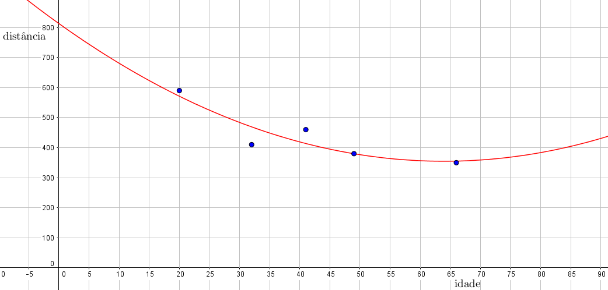

Podemos também procurar (em contraste com a subseção anterior) por funções não lineares que se ajustem a um conjunto de pontos. Por exemplo, dado um certo conjunto de pontos
(11.36)
vamos procurar por uma parábola
(11.37)
que melhor se ajuste a este conjunto de pontos, no sentido de que a soma dos quadrados dos erros seja a menor possível. Isto corrensponde a procurar pela solução de mínimos quadrados do seguinte sistema linear
(11.38)
Vejamos como ficaria a parábola que se ajusta aos dados do Exemplo 1:
Para encontrar a parábola de melhor ajuste como acima, devemos procurar pela solução de mínimos quadrados do sistema
(11.40)
Calculamos (com o auxílio de uma calculadora)
(11.41)
(11.42)
e resolvemos (escalonando, por exemplo, com o auxílio de um computador)
(11.43)
Logo, aproximando estas frações, obtemos
(11.44)

e a parábola desejada é, aproximadamente
(11.45)
Observamos que, apesar de o erro quadrático ser provavelmente menor neste exemplo, esta parábola se torna crescente a partir de um certo momento, fazendo com que o modelo não seja tão razoável para idades maiores. Por exemplo, é pouco provável que (na média), pessoas com 95 anos vejam a uma distância maior do que pessoas de 65 anos, como sugere a parábola acima.